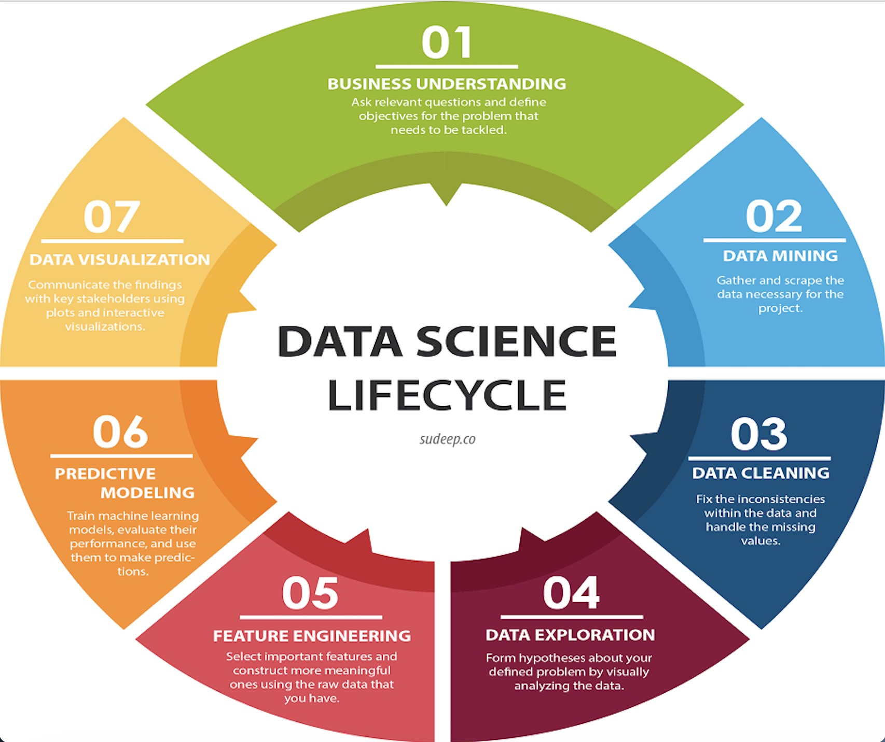

Cleaning Messy Column Names in Seconds with Pandas
Messy or inconsistent columns can make your data difficult to understand and work with. If your dataset is poorly formatted, you may notice you are spending more of your project trying to understand your own data than analyzing it. Fortunately, Python offers a very simple way to change your column names through pandas to make your analysis easier and more reliable.
In this post we will compile some common column issues into an easy step by step list that you can repeat on any project.
Why is cleaning data important?
Data cleaning is one of the essential steps in the data science lifecycle, as pictured below. Before using a dataset you must clean it to ensure accuracy, consistency, and completeness. Dirty data can lead to the wrong conclusions, confusing bugs, and wasted time.
Column names may seem trivial but they are actually an important part of a clean data set because they not only make the data clear for the analyst, but also improve data integrity for all potential users.

Image credit: Analytics Training Hub (https://analyticstraininghub.com/life-cycle-of-data-science/)
By investing a few minutes to clean your column names, you may be saving yourself hours in debugging and ensuring reliable results.
How do I use pandas to make consistent column names?
Cleaning column names in pandas can be simplified to three main steps:
Step 1: Remove leading and trailing whitespace
Step 2: Standardize formatting
Step 3: Remove special characters
Once you understand these steps, you can combine them into a single repeatable function which will clean all your datasets in seconds.
Step 1: Remove Leading and Trailing Whitespace
Sometimes datasets contain column names with extra spaces at the beginning or end. See the code block below for an example. Notice that there is a space at the beginning and end of each column name. ” Name ” is not the same as “Name”.
Since your analysis will require the column names to be exactly the same as they appears in your dataset, this can often lead to confusion and unnecessary errors.
import pandas as pdbooks = pd.DataFrame({" Title ": ["Pride and Prejudice", "The Great Gatsby", "Wuthering Heights"]," Author ": ["Jane Austen", "F. Scott Fitzgerald", "Emily Bronte"]," Year ": [1813, 1925, 1847]})# Strip whitespace using pandasbooks.columns = books.columns.str.strip()books
Title
Author
Year
0
Pride and Prejudice
Jane Austen
1813
1
The Great Gatsby
F. Scott Fitzgerald
1925
2
Wuthering Heights
Emily Bronte
1847
Step 2: Standardize Formatting
Column names are often inconsistent in formatting. Sometimes they have a mix of uppercase and lowercase letters. Spaces between words are also common, but not very useful. Standardizing the formatting will make it easier to refer to columns later. The example below contains column names with both uppercase letters and spaces. Watch how the column names change with one line of code.
cities = pd.DataFrame({"State": ["Utah", "Florida", "Connecticut"],"Capital City": ["Salt Lake City", "Tallahassee", "Hartford"],"Population in millions": [3.5, 23.4, 3.7]})# Making all words lowercase and removing spaces within column namescities.columns = cities.columns.str.lower().str.replace(" ", "_")cities
state
capital_city
population_in_millions
0
Utah
Salt Lake City
3.5
1
Florida
Tallahassee
23.4
2
Connecticut
Hartford
3.7
Step 3: Remove Special Characters
Special characters like #, $, %, or ! in your column names may cause problems with pandas operations or SQL queries. To keep your code error-free try removing them.
Now that you have learned these three steps, you can combine them into a single function to quickly and consistently clean any dataset.
movies = pd.DataFrame({" Title ": ["Superman", "Fantastic Four", "Dog Man"]," Box Office Amount in Millions $ ": [600, 519, 145]})def clean_columns(data): data.columns = ( data.columns .str.strip() .str.lower() .str.replace(" ", "_") .str.replace(r'[^a-zA-Z0-9_]', '', regex=True) )return data# Running our new cleaning functionmovies = clean_columns(movies)movies
title
box_office_amount_in_millions_
0
Superman
600
1
Fantastic Four
519
2
Dog Man
145
Conclusion
Messy column names don’t have to slow you down! By removing whitespace, standardizing formatting, and removing special chaaracters you can quickly make your dataset more readable and consistent, and less prone to errors.
With pandas, this process is repeatable and scalable, so you can apply it to any dataset in seconds. Make sure to add this step to your data cleaning workflow, your future self (and others) will thank you for it!
Source Code
---title: "Cleaning Messy Columns Blog"author: "Ella Walker"date: "2025-09-29"format: html: code-fold: false toc: truejupyter: python3---## Cleaning Messy Column Names in Seconds with PandasMessy or inconsistent columns can make your data difficult to understand and work with. If your dataset is poorly formatted, you may notice you are spending more of your project trying to understand your own data than analyzing it. Fortunately, Python offers a very simple way to change your column names through pandas to make your analysis easier and more reliable.In this post we will compile some common column issues into an easy step by step list that you can repeat on any project.## Why is cleaning data important?Data cleaning is one of the essential steps in the data science lifecycle, as pictured below. Before using a dataset you must clean it to ensure accuracy, consistency, and completeness. Dirty data can lead to the wrong conclusions, confusing bugs, and wasted time.Column names may seem trivial but they are actually an important part of a clean data set because they not only make the data clear for the analyst, but also improve data integrity for all potential users.By investing a few minutes to clean your column names, you may be saving yourself hours in debugging and ensuring reliable results.## How do I use pandas to make consistent column names?Cleaning column names in pandas can be simplified to three main steps:Step 1: Remove leading and trailing whitespaceStep 2: Standardize formattingStep 3: Remove special charactersOnce you understand these steps, you can combine them into a single repeatable function which will clean all your datasets in seconds.# Step 1: Remove Leading and Trailing WhitespaceSometimes datasets contain column names with extra spaces at the beginning or end. See the code block below for an example. Notice that there is a space at the beginning and end of each column name. " Name " is not the same as "Name". Since your analysis will require the column names to be exactly the same as they appears in your dataset, this can often lead to confusion and unnecessary errors.```{python}import pandas as pdbooks = pd.DataFrame({" Title ": ["Pride and Prejudice", "The Great Gatsby", "Wuthering Heights"]," Author ": ["Jane Austen", "F. Scott Fitzgerald", "Emily Bronte"]," Year ": [1813, 1925, 1847]})# Strip whitespace using pandasbooks.columns = books.columns.str.strip()books```# Step 2: Standardize FormattingColumn names are often inconsistent in formatting. Sometimes they have a mix of uppercase and lowercase letters. Spaces between words are also common, but not very useful. Standardizing the formatting will make it easier to refer to columns later. The example below contains column names with both uppercase letters and spaces. Watch how the column names change with one line of code.```{python}cities = pd.DataFrame({"State": ["Utah", "Florida", "Connecticut"],"Capital City": ["Salt Lake City", "Tallahassee", "Hartford"],"Population in millions": [3.5, 23.4, 3.7]})# Making all words lowercase and removing spaces within column namescities.columns = cities.columns.str.lower().str.replace(" ", "_")cities```# Step 3: Remove Special CharactersSpecial characters like #, $, %, or ! in your column names may cause problems with pandas operations or SQL queries. To keep your code error-free try removing them.```{python}bakery = pd.DataFrame({"item": ["croissant", "muffin", "bagel"],"price ($)": [2.50, 1.75, 3.25],"quantity (#)": [7, 12, 8]})# Removing special charactersbakery.columns = bakery.columns.str.replace(r'[^a-zA-z0-9_]', '', regex=True)bakery```## Putting it all TogetherNow that you have learned these three steps, you can combine them into a single function to quickly and consistently clean any dataset.```{python}movies = pd.DataFrame({" Title ": ["Superman", "Fantastic Four", "Dog Man"]," Box Office Amount in Millions $ ": [600, 519, 145]})def clean_columns(data): data.columns = ( data.columns .str.strip() .str.lower() .str.replace(" ", "_") .str.replace(r'[^a-zA-Z0-9_]', '', regex=True) )return data# Running our new cleaning functionmovies = clean_columns(movies)movies```## ConclusionMessy column names don't have to slow you down! By removing whitespace, standardizing formatting, and removing special chaaracters you can quickly make your dataset more readable and consistent, and less prone to errors.With pandas, this process is repeatable and scalable, so you can apply it to any dataset in seconds. Make sure to add this step to your data cleaning workflow, your future self (and others) will thank you for it!